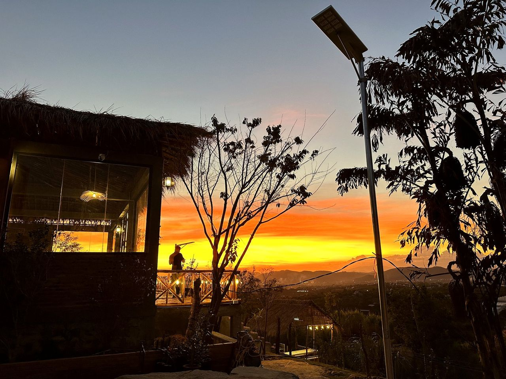
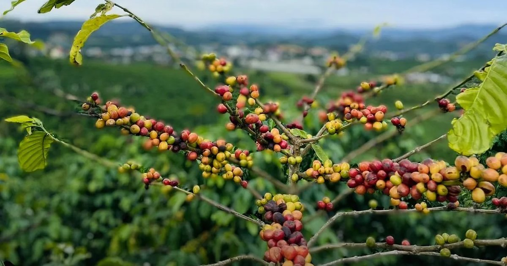

Người biết rõ mình muốn gì ở Nam Ban thường ít hối tiếc hơn người nghiên cứu mãi không quyết — dù họ mua để ở, để đầu tư, hay chỉ vừa bắt đầu phân vân. Bài này không nói bạn nên mua. Nó cho bạn khung để tự quyết định, cả mặt sáng lẫn mặt tối.

Trong năm năm qua, Đà Lạt và Bảo Lộc đã chạy một quãng dài. Người đến sau đang tìm nơi tiếp theo còn ở vạch xuất phát. Câu hỏi không phải "Nam Ban có tiềm năng không" — câu hỏi là tiềm năng đó nằm chính xác ở đâu, và cái giá thật của nó là gì.
Bản phân tích quy hoạch 2050 đã cho thấy định hướng: Nam Ban thuộc vành đai nghỉ dưỡng — nông nghiệp công nghệ cao lấy Đà Lạt làm hạt nhân. Bài này đặt câu hỏi tiếp theo của người đầu tư: định hướng đó biến thành cơ hội cụ thể như thế nào?
Cách hữu ích nhất để nhìn Nam Ban là đặt nó cạnh hai người anh đi trước trên hai trục: mặt bằng giá (đã tăng tới đâu) và dư địa tăng trưởng (còn bao nhiêu đường để đi).
Nam Ban nằm trên Quốc lộ 27, cách trung tâm Đà Lạt khoảng 25–30 phút, ở độ cao 900–1.000m với khí hậu mát quanh năm. Đây là "khoảng cách vàng": đủ gần để hưởng thương hiệu và tiện ích Đà Lạt, đủ xa để mặt bằng giá còn dễ chịu. Quỹ đất rộng và địa hình đồi tạo điều kiện cho nhà vườn, biệt thự nghỉ dưỡng và nông trại — đúng những gì quy hoạch khuyến khích.
| Tiêu chí | Đà Lạt nội đô | Nam Ban | Bảo Lộc | Đức Trọng |
|---|---|---|---|---|
| Khoảng giá tham khảo | rất cao | còn thấp | tương đương Nam Ban | tương đương Nam Ban |
| Cách TP.HCM (xe hơi) | 6–7 giờ | 4,5–6 giờ | 3,5–4,5 giờ | ~5 giờ |
| Khí hậu cao nguyên | 15–20°C | 18–23°C | 20–25°C | 18–23°C |
| Quỹ đất còn lại | hạn chế | còn nhiều | trung bình | còn nhiều |
| Phân loại đô thị (Phụ lục I) | Loại II | Loại III | Loại II | Loại III |
| Định hướng QH 2050 | nghỉ dưỡng quốc tế | đô thị sinh thái – nghỉ dưỡng | chế biến – đô thị | nông nghiệp cao – logistics |
| Dư địa tăng giá | thấp (đã tăng) | cao | trung bình | cao |
Một điểm thường bị nói mơ hồ, nay đã rõ: theo Phụ lục I của Quyết định 2786, xã Nam Ban Lâm Hà được xếp đô thị loại III — cùng phân loại với Đức Trọng, Di Linh, nằm trong mạng lưới vệ tinh quanh Đà Lạt. Điều này tạo nền tảng để vùng được ưu tiên hạ tầng đô thị — thay vì chỉ là một địa danh trên tờ rao bán. Đáng chú ý: mặt bằng giá ở Nam Ban, Bảo Lộc và Đức Trọng hiện tương đương nhau; khoảng cách lớn là với Đà Lạt — một bằng chứng cho thấy dư địa tăng giá của ba thị trường này còn rất rộng.
Hiểu người mua quan trọng không kém hiểu mảnh đất. Theo quan sát thị trường hiện nay, dòng người mua Nam Ban chia thành bốn nhóm:
Điều đáng chú ý: ba trong bốn nhóm này mua vì giá trị sử dụng thật — ở, nghỉ, canh tác — chứ không thuần đầu cơ. Một thị trường có nhu cầu thực làm nền thường bền hơn thị trường chỉ sống bằng kỳ vọng.
Hưởng lợi trực tiếp khi đô thị phát triển và lưu lượng tăng. Phù hợp tầm nhìn dài hạn 3–5 năm. Cần ưu tiên pháp lý rõ và lộ giới ổn định.
Lý tưởng để xây lưu trú sinh thái — đúng trục "du lịch nghỉ dưỡng" mà quy hoạch khuyến khích. Có thể tạo dòng tiền cho thuê thay vì chỉ chờ tăng giá.

Vừa có thu nhập nông nghiệp (cà phê, bơ, sầu riêng), vừa mở hướng du lịch trải nghiệm — khớp định hướng "nông nghiệp công nghệ cao gắn chế biến" trong quy hoạch.
Mẫu số chung của ba loại trên: chúng tạo ra giá trị sử dụng hoặc dòng tiền, thay vì chỉ là một con số chờ người sau trả cao hơn. Trong một thị trường siết tín dụng, tài sản có dòng tiền luôn có lợi thế.
Đây là phần mà một lời chào hàng sẽ bỏ qua, còn một bản phân tích trung thực thì không thể:
Kiểm tra kỹ mục đích sử dụng (ONT, CLN, RSX) và khả năng chuyển đổi. Không phải đất vườn nào cũng lên được thổ cư. Sau sáp nhập, địa chỉ và ranh giới hành chính cũng đã thay đổi — phải đối chiếu giấy tờ với hệ quy chiếu mới.
Chính định hướng "bảo tồn thiên nhiên, đa dạng sinh học" tạo nên sức hút nghỉ dưỡng cũng đồng nghĩa một phần đất thuộc khu vực bảo vệ, hạn chế xây dựng. Cùng một định hướng vừa tạo cơ hội vừa vẽ ra vùng cấm.
Quyết định 2786 mới đưa ra định hướng; phân khu chức năng chi tiết nằm ở các quy hoạch tiếp theo. Mua trước khi biết thửa đất rơi vào phân khu nào là đặt cược vào một bản vẽ chưa hoàn tất.
Một số khu ngoại vi chưa có điện 3 pha, đường nội khu còn hẹp. Bắt buộc kiểm tra thực địa, không tin hoàn toàn vào bản đồ chào bán.
Thị trường 3–7 năm, không phải lướt sóng. Cần chuẩn bị tâm lý và dòng vốn không phụ thuộc thanh khoản ngắn hạn — vì thanh khoản ở đây còn mỏng.
Khi quy hoạch rõ, nhiều chủ đất sẽ ra hàng cùng lúc. Lợi thế thuộc về người chọn lọc vị trí và pháp lý tốt, không chạy theo số đông.
"Tôi sẽ cho bạn thấy toàn cảnh Nam Ban — kể cả những điều khiến bạn quyết định không mua."
Cân nhắc cả hai mặt, bức tranh khá rõ. Nam Ban hội tụ đủ đặc điểm của một thị trường ở giai đoạn đầu của chu kỳ tăng trưởng: giá còn thấp, quy hoạch vừa định hình theo hướng có lợi, hạ tầng vùng đang được đầu tư mạnh, và nhu cầu sử dụng thật đang tăng. So với Đà Lạt (đã tăng quá mức, khó tiếp cận) và Bảo Lộc (đang phát triển nhưng thiếu cảnh quan cao nguyên đặc trưng), Nam Ban đang ở một trong những điểm xuất phát hấp dẫn nhất của chu kỳ mới 2026–2030.
Nhưng "thị trường tốt" và "thương vụ tốt" là hai chuyện khác nhau. Cơ hội ở Nam Ban là có thật — và nó chỉ thuộc về người mua đúng vị trí, sạch pháp lý, ngoài vùng hạn chế, với một tầm nhìn đủ dài và một cái đầu đủ tỉnh để không bị cuốn theo đám đông. Toàn cảnh là để bạn nhìn rõ cả con đường, chứ không phải để bạn vội bước.
Giá thấp không đồng nghĩa cơ hội — cơ hội chỉ xuất hiện khi giá, pháp lý và thanh khoản cùng đứng về một phía. Thanh khoản thực tế ở từng khu vực không đồng đều, và dữ liệu giao dịch ở Nam Ban chưa minh bạch như các thị trường lớn. Thay vì hỏi "Nam Ban có đáng đầu tư không":
Nam Ban có phải là một nơi phù hợp với cách mình muốn sống, đầu tư và tích lũy tài sản không?
Định hướng phát triển và phân loại đô thị loại III dựa trên Quyết định 2786/QĐ-UBND ngày 6/6/2026 (điều chỉnh Quy hoạch tỉnh Lâm Đồng 2021–2030, tầm nhìn 2050) và Phụ lục I kèm theo. Khoảng giá, cơ cấu người mua và đánh giá thị trường là ước tính tham khảo, có thể thay đổi theo thời điểm, vị trí và pháp lý cụ thể.
Đây không phải tư vấn pháp lý hay khuyến nghị đầu tư cá nhân. Trước mọi giao dịch, hãy thẩm định pháp lý độc lập và đối chiếu quy hoạch chi tiết được công bố.
Panorama có báo cáo đọc quy hoạch Nam Ban đến 2050 — bản đồ 4 phân khu, vùng nào được xây nhà ở, vùng nào bảo tồn không nên mua. Gửi riêng kèm phần trả lời cho khu bạn đang quan tâm.
Xem báo cáo bản đồ quy hoạch →